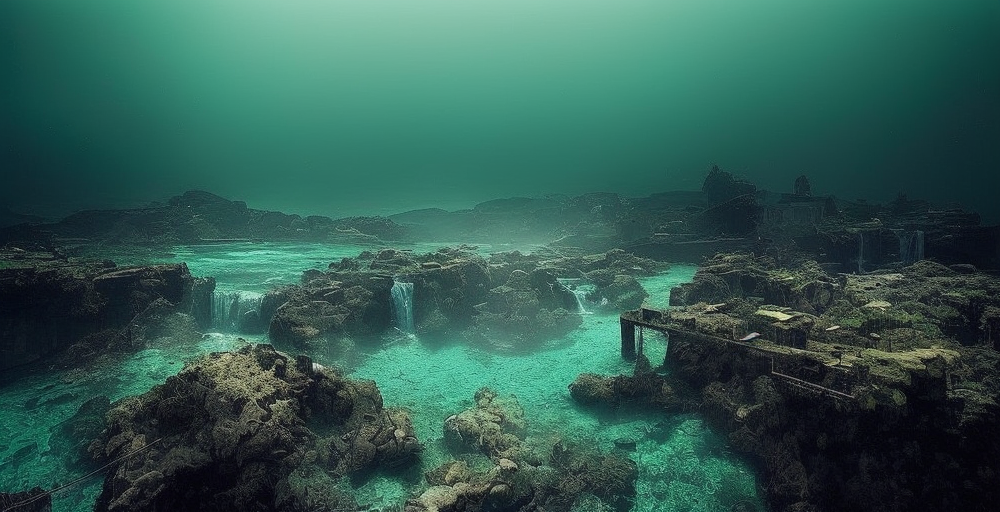

25 de março de 2024
Uma expedição científica liderada pela renomada oceanógrafa Dra. Marina
Santos revelou a descoberta de uma cidade submersa no fundo do oceano. Os
pesquisadores acreditam que a cidade pode ser uma antiga civilização
desconhecida, desafiando as teorias previamente aceitas sobre o
desenvolvimento humano.
Dra. Marina Santos